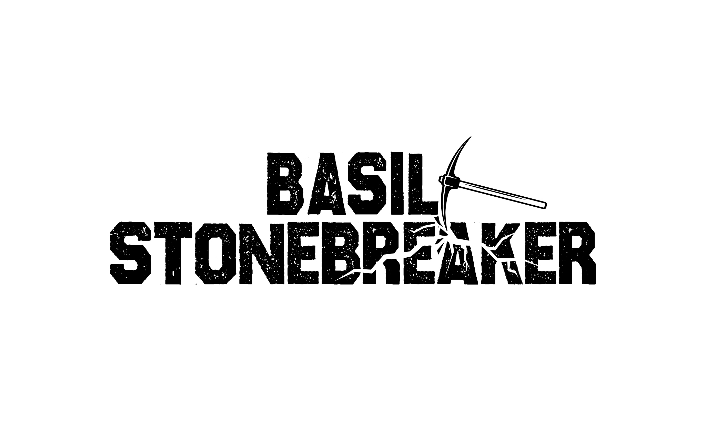

 und
Der Himmel, den sie sahen, durchlief seine Verwandlung und färbte sich in ein lebhaftes, verbranntes Orange, das alles darunter in ein rot-orangenes Leuchten tauchte. Die mit Asche bedeckte Strasse vor ihnen gabelte sich, während ihr Fahrer in den Rückspiegel schaute, wo ein klarer Himmel, eine Fluss und einen dichter Wald zu sehen waren. Max, Basils Betreuer, bestand auf Stadtreisen zur sozialen Interaktion, aber die andauernden Waldbrände haben mittlerweile diesen Ausflug aus Basils persönlichem Paradies in eine Szene verwandelt, die an Dantes Inferno erinnerte.
Basil bewegt seine Finger geschwind über die Tastatur, die an seinem Oberschenkel befestigt ist. In seiner Nachricht fordert er eine Verdopplung des Honorars aufgrund des erhöhten Gesundheitsrisikos und der Notwendigkeit von Sicherheitsausrüstung inmitten der wütenden Brände. Die Antwort blinkt „Zugestimmt“, bevor sie langsam verschwindet. Ein Hinweis erscheint auf dem Armaturenbrett, „Änderung zugestimmt, ungültig bei Verspätung“, begleitet von einem cartoonhaften „Zum Zustimmen jetzt ICH STIMME ZU drücken.“ Widerwillig wählt er „ICH STIMME ZU“, waehrend er über die Notwendigkeit von Schutzausrüstung murrt, und seinen Lieferanten über die geplante Route und die geschätzte Ankunftszeit informiert.
Während Basil durch die Windschutzscheibe seines Mercedes 300D die Landschaft betrachtet, erzeugt der sanfte Fall von Ascheflocken einen ruhigen, fast hypnotischen Effekt auf dem Glas. Jede Flocke scheint eine Geschichte zu erzählen, und seine Gedanken schweifen ab. “Könnte dieser Schutthaufen einst jemandes Zuhause gewesen sein?” ueberlegt er, seine Gedanken von einer Mischung aus Neugier und Melancholie geprägt.
Das Auto setzt seine Fahrt fort und laesst die Ruhe der schneebedeckten Vororte hinter sich. Als sie sich der Stadt nähern, dutrchlaeuft die Umgebung eine drastische Verwandlung. Die frische, klare, waldige Luft wird von einer erdrückenden Hitze abgelöst, die gegen die Fenster zu pressen scheint. Beim Eintreten in die Hitze-Kuppel der Stadt spürte Basil, wie die Temperatur im Auto stieg und die Sicht nach außen rapide abnimmt.
Basil bewegt geschickt seine Hände über das Armaturenbrett, schaltet routiniert verschiedene Schalter um. Er aktiviert die fortschrittlichen Systeme des Autos - Infrarot- und Bewegungserkennung -, um den sich verdichtenden Dunst zu durchdringen. Trotz seiner Bemühungen verbessert sich die Sicht kaum, der Dunst der Stadt erweist sich als mächtiger Gegner der Technologie.
Vorsichtig navigierend, wenden sich Basils Gedanken der düsteren Realität der Situation zu. Er erinnert sich an Nachrichtenberichte, die fehlerhafte Hochspannungsleitungen als einen Hauptverursacher nannten, zusammen mit jahrelanger Vernachlässigung der Buschpflege um Stromleitungen. Diese Faktoren, kombiniert mit der einzigartigen Topographie und dem Klima der Stadt, hatten einen perfekten Sturm für Feuergefahren geschaffen.
Die Bedrohung durch Feuer war keine ferne Möglichkeit mehr, sondern eine unmittelbare Gefahr. Basil kennt die Risiken nur allzu gut. Die überbeanspruchte und veraltete Infrastruktur der Stadt ist unter diesen Bedingungen eine tickende Zeitbombe. Er versteht, dass jede Entscheidung, die er jetzt trifft, jeder Schritt, den er bei dieser eingeschränkten Sicht macht, den Unterschied zwischen Sicherheit und Gefahr bedeuten könnte.
Tief durchatmend konzentriert sich Basil wieder auf die Straße vor ihm, seine Sinne geschärft. Er weiss, dass er in dieser Situation auf mehr als nur Technologie vertrauen musst; Intuition und Erfahrung sind seine Wegweiser durch die gefährliche Stadtlandschaft. Während er weiterfaehrt, lastet die Realität der misslichen Lage der Stadt schwer auf ihm - eine ständige Erinnerung an das fragile Gleichgewicht zwischen menschlicher Innovation und der unberechenbaren Kraft der Natur.
Sich in seinem Sitz entspannend und das Tempolimit einhaltend, kehren Erinnerungen an einen Sommerjob bei einem Energieunternehmen zurück, bei dem er Schafe hütete. Das Management der Herde in der Nähe von Stromleitungen lehrte ihn wertvolle Lektionen über Stromverteilung, Sicherheit und Gefahrenzulagen für das Risiko. Er erinnert sich daran, eine Glühbirne als Indikator für die Nähe zu den Leitungen verwendet zu haben, die zu flackern begann, wenn die Schwelle gefährlich wurde.
Während Basil durch die Trümmer des Waldbrands gut vornakpmmt, verlässt er die Stadt in ein exurbanes Gebiet und kommentiert „Mich wirst du nie hier wohnen sehen.“ Über Bernards Umzug nachdenkend, erinnert er sich an sein Loft und seine Lieblingsbar, im Kontrast zu Bernards Entscheidung, abgeschieden zu leben.
Mit einem Vollgesichts-Atemschutzgerät und einem in Plastik eingewickelten Seesack-Rucksack bewegt sich Isadora durch die verlassene Stadt. Es sind nur wenige Menschen unterwegs, und die meisten von ihnen tragen Atemschutzmasken oder benutzen nasse Bandanas und Schutzbrillen. Isadora erinnert die Szene an Steampunk. Ihre Beweg;lichkeit ist im Vergleich zu anderen weniger eingeschränkt, da ihr Atemschutzgerät mit einem tragbaren Sauerstofftank verbunden ist und sie einen Luftvorfilter an ihrer Hüfte hat. Der Vorfilter erleichtert nicht nur die Arbeit ihrer Gesichtsfilter, sondern verbessert auch die ansonsten unangenehme Luft, durch die sie geht. Ihr Ziel? Ein für die Öffentlichkeit verstecktes und unzugängliches Rechenzentrum.
In den letzten drei Jahren hat sich Isadora dem Aufbau von Kommunikationsinstallationen für ihre Freiwilligenarbeit gewidmet. Ihr Trupp agiert an der Front, verwaltet Funkgeräte, fängt feindliche Kommunikation ab und sammelt Informationen, bevor er vorrückt. Sie erinnert sich an eine beinahe gescheiterte Mission, bei der sie in einer dunklen Nacht einen Turm hinunterkriechen musste, in Erwartung ihres triumphalen Markenzeichens. Doch die Zeit lief ab, also blickte sie durch ihre Nachtsichtbrille und sah den herannahenden Feind.
Momente später markierte eine Reihe von roten und gelben Explosionen in der Ferne die Position des Feindes - ein Signal für ihren Zug. Isadora reagierte amüsiert, ähnlich dem Kichern eines Schulmädchens, bevor sie vorwärtsschritt. Ihr Trupp kennt sie als ‘Joker’, wegen ihrer Fähigkeit, tödliche Fallen zu stellen und explosive Darbietungen zu kreieren. Dieses Mal ahmte ihre Folge von Explosionen lose Tschaikowskys 1812 Ouvertüre nach. Sie glaubte, dass es passend wäre, einen bleibenden psychologischen Eindruck bei den Überlebenden zu hinterlassen, die vielleicht in Zukunft diese Melodie hören, denn physische Wunden heilen, aber psychologische Narben bleiben.
Isadora erreichte die ungefähre Lage des Rechenzentrums. Trotz dunklem, tropfendem Wasser, das sie durchnässte und leichte Überschwemmungen verursachte, erkundete sie sorgfältig Stromleitungen und Netzwerkkabel. Als sie sich durch Regale und Motherboards bewegte, war sie überrascht, dass es sich um eine Bitcoin-Mining-Operation handelte. Den Ethernet-Kabeln folgend, verfolgte sie den Weg zur Netzwerkausrüstung und stolperte über einen schimpfenden Systemadministrator. Leise hinter den Server-Schränken manövrierend, befestigte Isadora geschickt eine dünne Schnur am Auslöser einer verborgenen Schrotflinte, die auf einem scheinbar normalen Bürotisch im düsteren Lagerhaus stand.
Im schwach beleuchteten Serverraum war die Luft von Frustration erfüllt. Der Systemadministrator, dessen Geduld am Ende war, schlug auf die ihn umgebende Maschinerie ein. Sein Fuß traf einen hochwertigen Server, das Geräusch hallte von den Wänden wider. “Ты кусок мусора!” fluchte er auf Russisch, seine Stimme vor Wut triefend – “Du Stück Müll!”
In diesem Moment lenkte Isadora, bisher unbemerkt, ihre Aufmerksamkeit von dem komplexen Netzwerk der Server ab. Sie bewegte sich mit einer Ruhe, die stark mit der Aufregung des Technologen kontrastierte. “Sie sollten Ihre Ausrüstung mit mehr Respekt behandeln”, riet sie sanft, ein Hauch von Amüsement in ihrer Stimme. “Vielleicht sollten Sie ihr sogar einen Namen geben. Etwas wie Frank, vielleicht.” g Ihre Worte überraschten den Technologen. “Ё моё!” rief er aus, sein russischer Ausdruck des Erstaunens grob übersetzt als “Ach du meine Guet!” Er blickte sie an, seine Neugier geweckt. “Was machen Sie hier? Sind Sie eine von Michails Bekannten?”
Isadoras Antwort war genauso gelassen wie ihr Auftreten. “Nein, ich gehöre nicht zu Michails Leuten. Ich bin hier für etwas Wichtigeres. Ich bin hier, um die Kontrolle über die GostCoin-Mining-Operation zu übernehmen, die Sie betreiben.” Ihr Blick war unerschütterlich, ihre Stimme fest und dennoch sanft. “Sie können mir entweder helfen und vielleicht einen Weg finden, von diesem Übergang zu profitieren, oder Sie können mich behindern und die Konsequenzen tragen. Das Schicksal dieses Ortes und Ihres hängt in der Schwebe. Treffen Sie Ihre Entscheidung weise.”
In der aufgeladenen Atmosphäre des Serverraums blieb dem Technologen nichts anderes übrig, als über seine Optionen nachzudenken. Seine Entscheidung war entscheidend: Entweder er kooperierte mit Isadoras geheimnisvoller Agenda oder er schwieg und riskierte das Unbekannte. Die Einsätze waren hoch, und seine Wahl würde die Zukunft der Operation, die er so sorgfältig aufgebaut hatte, bestimmen.
Doch er entschied sich für eine dritte Option, die nicht zur Debatte stand - und stuerzte sich auf die Shotgun, die Isadora vorbereitet hatte. Untrainiert mite einer solchen Waffe zog er sie aus der Montierung und blieb am Seil haengen. Zu seiner kurzen Ueberraschung schaute er zurueck, zog wieder am Seil, schoss sich selbst in den Kopf, und bedeckte alle Schraenke mit Gehirnmasse und Schaedelfragmenten.
Bernard wohnt am Stadtrand in einem Viertel, das als “Exurbs” bekannt ist. Dieser Ort bietet ihm eine friedliche Flucht vor dem geschäftigen Stadtleben und eine einzigartige Wohnsituation. Sein Zuhause wurde geschickt aus umfunktionierten Schiffscontainern gebaut, was es zu einer unkonventionellen, aber praktischen Bleibe macht. Allerdings war der Hausbau wegen unzureichender Mittel der Baufirma unvollständig, sodass das Haus zu drei Vierteln fertiggestellt war. Trotz seines unscheinbaren Äußeren bietet das Innere einen geräumigen Wohnbereich. Dieses unkonventionelle Zuhause bietet Bernard eine außergewöhnliche Abgeschiedenheit, ein Luxus, der innerhalb der Stadtgrenzen oft fehlt.
Bernards Wohnsitz befindet sich in einer Sackgasse eines sich entwickelnden Viertels. Er liegt günstig in der Nähe von Annehmlichkeiten, aber weit genug entfernt, um eine Distanz zum geschäftigen Stadtleben zu wahren. Das diskrete Erscheinungsbild des Hauses hilft Bernard, unerwünschte Aufmerksamkeit zu vermeiden. Er verfügt über ein Sprachkommunikationssystem, das mit seinem Handy verbunden ist, sodass er überall auf dem Grundstück Anrufe entgegennehmen kann. Heute erhielt Bernard eine Nachricht von Basil, der in drei Stunden zu Besuch kommen wird. Bernard freut sich auf Basils Ankunft, da sie eine langjährige Handelspartnerschaft haben. Im Gegensatz zu Bernards anderen Kunden, die oft Privatdetektive oder beschäftigte Studenten sind, ist Basil immer mit den Waren zufrieden, die Bernard bereitstellt. Bernard ist gerade von “The Farm” zurückgekehrt.
Als sie versuchte, die Sicherheitsmaßnahmen zu aktivieren, war sie verwirrt über das Ausbleiben einer Reaktion. Ein seltsames Gerät, ähnlich einem Kreditkartenleser, war unter dem Schreibtisch befestigt, genau wie das, welches der Verstorbene bei sich trug. Als sie die Schlüsselkarte in den Schlitz unter dem Schreibtisch steckte, erwachte der Bildschirm zum Leben und forderte den schwer fassbaren Sicherheitsschlüssel an.
Mit einem lässigen Schulterzucken steckte Isadora den USB-Schlüssel in die Tastatur. Sein Licht blinkte schwach, und als sie ihn berührte, wurde eine Kettenreaktion ausgelöst. Die einst ruhenden Server sprangen an, Monitore zeigten kryptische Daten an, und die Beleuchtung im Raum wurde gedimmt, als ob sie Respekt vor der gespenstischen Szene zollen würde.
Als die Server hochfuhren, nahm sich Isadora einen Moment Zeit, um das verlassene Terminal zu untersuchen. Symbole bedeckten den Bildschirm, jedes deutete auf die digitale Welt des Verstorbenen hin. Unter ihnen fiel ihr ein vertrauter Anblick ins Auge - ein Crypto-Coin-Wallet-Symbol schimmerte neben einem anderen, das als ‘Passwort-Manager’ gekennzeichnet war. Isadora navigierte geschickt zum Passwort-Manager, wechselte dann zurück zum Terminal und gab den Befehl ‘plündern’ ein. Der von ihr zuvor angeschlossene Mausjiggler verwandelte sich in ein automatisiertes Hack-Tool, dessen Aktivität den Bildschirm mit einer Serie von digitalen Manövern erleuchtete.
Laut über ihren nächsten Schritt nachdenkend, zog Isadora schnell den Körper von Mr. None-of-the-Above, versteckt in den Schatten, und platzierte ihn unter einem der summenden Servergestelle. Die unheimliche Abwesenheit jeglicher Alarme oder Warnungen gab ihr einen Moment des Vertrauens. Vor sich hin summend, begann sie, sich auf ein explosives Finale vorzubereiten, um den beunruhigenden Abend zu beschließen.
Aus ihrer Tasche zog sie, was wie ein typisches Cyber-Pad aussah - ein aufklappbares Display und eine Zwei-Daumen-Tastatur. Sie benutzte es, um ihrem Stellvertreter Niklos eine Nachricht zu senden, in der sie ihn informierte, dass NOTA Enterprises kurz vor einem explosiven Marktausverkauf stand und er sich auf den Auftrag vorbereiten sollte. Sie erhielt eine dreiwörtige Antwort: „Datum und Symbol“. Nicht mehr summend und fröhlich antwortete sie scherzhaft: „Bald und IDK“, was für „Ich weiß nicht“ als Aktiensymbol stand. Eine unbeeindruckte Antwort wiederholte: „Datum und Symbol“, was Isadora dazu brachte, sich auf den Boden zu setzen und auf ihrem Pad nach ihrem Aktiensymbol zu suchen. Nachdem sie die erwartete Antwort gesendet hatte, kehrte sie zu ihrer Aufgabe zurück, das Rechenzentrum nach nützlicher Hardware oder Werkzeugen zu durchsuchen. Unüberraschenderweise stammte alles um sie herum aus dem letzten Kryptowährungsboom. Sie packte so viele Festplatten wie möglich, kurz bevor die platzierten Sprengsätze zu piepen begannen. Während sie Sprengsätze vorbereitete, um das Rechenzentrum zu zerstören, begegnete Isadora einer knurrenden Fellkugel. „Knurrst du mich an, Kätzchen?“ Sein Schwanz war wie bei einem Hund hochgestellt, was darauf hindeutete, dass es vielleicht mit einem Rudel Hunde in dieser Gegend aufgewachsen war. „Du solltest besser mit mir kommen; es wird hier bald nicht mehr sicher sein.“ Isadora kehrte zur Technikstation zurück und holte ihr kleines orange-weißes Gerät vom Schreibtisch.
Ihr Cyber-Pad piept noch einmal und zeigt an, dass die Zünder synchronisiert wurden. „Bitte wählen Sie Ihr Abreisefenster: 1 Minute, 5 Minuten oder 15 Minuten.“ Sie wählt fünf Minuten, hebt die knurrende Katze auf und legt sie in ihre Tasche. Sie lacht, als der Raum mit kleinen blinkenden Lichtern gefüllt wird, die kurz davor sind zu explodieren.
Basil lenkte sein Fahrzeug geschickt von der überfüllten Autobahn in die verlassenen Außenbezirke nahe Bernards Wohnort in der Stadt. Als er sich näherte, wurde er mit einem gespenstischen Anblick konfrontiert - ein Viertel, das zu verkohlten Ruinen reduziert war. Die Landschaft war übersät mit Trümmerhaufen und geschwärzten Bäumen, eindeutige Beweise für eine Gemeinschaft, die die Bedrohung durch Waldbrände unterschätzt hatte.
An einer verlassenen Ampel angekommen, fühlte Basil ein eigenartiges Gefühl der Isolation in der Verwüstung um ihn herum. Nach vorsichtigem Abscannen seiner Umgebung entschied er sich, die leere Kreuzung zu umfahren und durch die Überreste eines Viertels zu fahren, das offensichtlich nicht ausreichend auf Waldbrände vorbereitet war. Die unheimliche Stille umhüllte ihn und verstärkte das Gefühl der Verwüstung in der verbrannten Umgebung.
Bernard, ein Enthusiast der Apokalypse-Vorbereitung, lebte auf einem Hügel neben einem künstlichen Stausee und einem kaskadierenden Fluss. Feuer war nicht seine Hauptbesorgnis; stattdessen konzentrierte er sich darauf, während der kurzen Fahrt vom Tor zum Nebeneingang eine atembare Atmosphäre für sich und seinen Gast zu gewährleisten. „Wo habe ich diese CBRN-Gasmasken zu Beginn der Pandemie versteckt?“, rief Bernard triumphierend aus, als er zwei Masken mit dramatischem Flair hervorbrachte, erinnernd an Link aus Zelda. „Es ist gefährlich, allein zu gehen! Nimm dies.“
In perfekter Abstimmung mit Bernards Vorbereitungen erreichte Basil nach der Durchquerung der Verwüstung und dem Weg nach oben in das abgeschiedene Viertel Bernards Haus. Verärgert darüber, dass er am Tor parken und manuell um Einlass bitten musste, drückte Basil seinen Frust in einer farbenfrohen Mischung aus Polnisch und Englisch aus. „Świński skurwiel, mach auf!“, schrie er ins Mikrofon, bevor er grummelnd zu seinem Auto zurückkehrte. Das Tor zu Bernards Paradies öffnete sich, ließ gerade genug Platz für Basils Fahrzeug, um hindurchzufahren, und schloss sich prompt hinter ihm. Basil fuhr geschickt sein Fahrzeug in Richtung der einzigartig improvisierten Garage. Als Basil das Auto anhält, bemerkt er eine Gasmask, die bequem auf der Fahrerseite liegt, beleuchtet von den Scheinwerfern. „Wie aufmerksam von ihm, auf die kleinen Details zu achten“, denkt Basil anerkennend. Er parkt das Fahrzeug vorsichtig und öffnet seine Tür. Mit der Gasmask aufgesetzt merkt er, dass sie seine Atmung im Vergleich zu seiner bisherigen provisorischen Lösung, ein feuchtes Handtuch über sein Gesicht zu legen, erheblich verbessert.
Basil dehnte und verdrehte seine müden Muskeln nach der langen Fahrt, um Bernard zu treffen, und versuchte so, seine Steifheit zu lindern. Erschöpft von der Reise umarmte er Bernard kurz, stellte seine Reisetasche ab und ließ sich auf Bernards Sofa nieder. „Warum kommst du nicht rein und machst eine Pause?“, neckte Bernard mit einem Grinsen. Die übergroße Seesacktasche weckte Bernards Neugier, ausgestattet mit Trageriemen für leichtes Tragen. Im Inneren schienen kleinere Taschen wahllos in die Seesacktasche gepackt zu sein.
„Sind das alles…?“ fragte Bernard.
„Jup, bis oben hin voll. Die letzte Ernte war schlecht, aber diese hier… überquillend“, antwortete Basil lässig und gestikulierte mit den Händen.
„Darf ich mal sehen?“ erkundigte sich Bernard zaghaft.
„Klar doch“, antwortete Basil grinsend.
Das Öffnen des versiegelten Seesacks war ein systematischer Prozess: das Lösen der Spanngurte, das Trennen verschiedener Zubehörteile und schließlich das Öffnen eines magnetischen Verschlusses. Als die Tasche geöffnet wurde, füllte ein deutlicher Geruch die Luft – eine einzigartige Mischung aus Psilocybin-Pilzen und Marihuana, den beiden Haupterzeugnissen von Basils geliebtem Unternehmen, The Farm. Zwischen Reihen von Obststräuchern und Gemüse hatten diese Kulturen eine bedeutende Wichtigkeit. Während die halluzinogenen Pilze mit Bernard gehandelt wurden, dienten die restlichen als wesentliche Zutaten zur Bereicherung des Bodens für andere Kulturen.
The Farm erfüllte mehrere Zwecke – es war Basils Zufluchtsort, ein Ort für Bernards gelegentliche Gartenarbeitswochenenden und ein Lager für Güter, Erzeugnisse und Ausrüstung. Es war nicht extravagant, nur eine kleine Hütte mit Blick auf eine Klippe. Doch hinter dieser bescheidenen Hütte lag The Farm. Von einem Ende zum anderen war sie mit Erzeugnissen gefüllt – einige gediehen vertikal an den Wänden, andere hingen in Becken von der Decke. Reihen von Bohnen, Kürbissen, scharfen Paprika und sogar Mais schmückten den Raum. Im Laufe der Jahre hatte sich der Zweck von The Farm weiterentwickelt. Ursprünglich als Garten mit luftreinigenden Pflanzen für das Leben an der Klippe konzipiert, hatte sie sich in ein mehrstufiges landwirtschaftliches Unternehmen verwandelt, komplett mit Goldfischen, Lachsen und Schnecken.
Bernard wandte seinen Blick Basil zu, der nun friedlich auf dem Sofa eingeschlafen war. Sanft deckte er Basil mit einer warmen Wolldecke zu, um seinen Komfort zu gewährleisten, bevor er sich der anstehenden Aufgabe zuwandte – dem Katalogisieren von Basils reicher Ernte.
Wie erwartet war die Ernte reichhaltig, was Basil ermöglichte, eine bedeutende Kreditlinie für sein bevorstehendes Vorhaben zu sichern. Er zog ein Stück Papier aus seiner Tasche und reichte es Bernard, was darauf hindeutete, dass es Zeit war, mit der Inventur zu beginnen.
Mit großem Interesse prüfte Bernard die Liste, die Gegenstände wie ein Cyber-Pad, ein 50ft Ethernet-Kabel und einen Burst-Sender enthielt. Die Liste setzte sich auf der zweiten Seite fort und enthielt wichtige Software, Hardware und spezialisiertes Equipment.
„Ich frage normalerweise nicht, aber…“ begann Bernard zu sagen.
„Keine Sorge. Es ist ein Routineauftrag, obwohl komplizierte Politik involviert sein könnte“, unterbrach Basil.
Plötzlich alarmiert sprang Basil von seinem Sitz auf und erschreckte Bernard. „Wie spät ist es!?“
Basils Dringlichkeit wuchs, als er Bernards Antwort hörte. „Ich habe es nicht verpasst!“, rief er aus, ein Nervenkitzel durchzog ihn.
Mit einem plötzlichen Energieausbruch sprang Basil auf, schnappte sich seine Tasche und durchwühlte sie schnell nach seinem Fernglas, GPS und Kompass. Er warf die Vorhänge beiseite und eilte auf die Spitze eines nahegelegenen Containers, wo er prompt sein GPS holte. Als er auf die Stadtlandschaft blickte, tanzte ein atemberaubendes Schauspiel der Aurora Borealis am Himmel, ein Ergebnis der kürzlichen intensiven Sonnenfleckaktivität, verstärkt durch die Partikel in der Luft.
Doch mitten in diesem himmlischen Spektakel brach eine unerwartete Serie von Explosionen in der Nähe der Stadtanlegestellen aus und überraschte Basil. Durch sein Fernglas zählte er akribisch ein halbes Dutzend bedeutende Primärexplosionen, begleitet von doppelt so vielen Sekundärexplosionen, was auf eine hochentzündliche Quelle im Epizentrum hindeutete.
„Industrieunfall?“, fragte Bernard, seine Stimme von Besorgnis geprägt.
„Unwahrscheinlich“, antwortete Basil scharf, sein Fokus auf die sich entfaltenden Ereignisse gerichtet. „Wie spät ist es?“
„Genau 20 Uhr“, bestätigte Bernard, ihre Blicke trafen sich in einem Moment des gemeinsamen Verständnisses. Beide Männer ahnten, dass dies mit einem geplanten Ereignis zusammenfiel, statt ein zufälliger Vorfall zu sein.
Basils Aufregung vermischte sich mit einem plötzlichen Anstieg an Besorgnis, als die Explosionen die Ruhe des Abends störten. „Ist das die alte Getreidefabrik?“, fragte er, um die Quelle zu erkennen.
„Ja, wurde von einer zwielichtigen Firma mit Verbindungen nach Osteuropa gekauft“, antwortete Bernard mit einem Hauch von Skepsis, was auf eine mögliche Ursache für das Chaos hindeutete.
Basils Kopf war voller Möglichkeiten. „Hast du Lust auf eine Fahrt?“, schlug er vor, mit einem entschlossenen Blick in seinen Augen.
„Nur wenn wir ausgerüstet sind. Du bist hier ohne Gasmaske angekommen, und es gibt einen Waldbrand zwischen hier und dort, falls du es vergessen hast“, ermahnte Bernard und betonte die potenziellen Gefahren.
„Nein, ich wusste nur, wo ich war und hoffte, dass mein Kredit gut ist“, erwiderte Basil, mit einem Hauch von Schelm in seiner Stimme, um die angespannte Atmosphäre aufzulockern.
Ihr Gespräch wurde durch den fernen Schein der anhaltenden Explosionen unterbrochen. Basil verspürte ein Gefühl der Dringlichkeit. „Wir müssen uns beeilen. Kannst du das Notfallset aus dem LKW holen?“, fragte er Bernard, während er bereits dabei war, den Rest ihrer Ausrüstung zu sammeln.
„Bin schon dran“, antwortete Bernard und holte schnell das Kit aus dem Fahrzeug, während Basil ihre essentiellen Vorräte zusammenstellte.
Mit einem Gefühl der Bereitschaft stürzten sie zum LKW von Bernard, Ausrüstung und Notfallkit in der Hand, bereit, sich den unbekannten Gefahren in der alten Getreidefabrik zu stellen. Als sie davonfuhren, tanzte die Aurora Borealis weiterhin faszinierend am Nachthimmel, ein starker Kontrast zu dem sich entfaltenden Chaos in der Ferne.
Isadora verließ das schmutzige Gebäude mit einer lässigen Nonchalance und summte dabei „Da Doo Ron Ron“ von The Crystals. Sie warf einen Blick auf ihre Uhr, es war 7:55, und freute sich auf die bevorstehende „Reinigung“ des verkommenen Ortes.
Ihre spielerische Interpretation des Refrains hallte durch die Gasse und weckte die neugierige Aufmerksamkeit des Kätzchens, das sie zuvor gerettet hatte und das scheinbar von Isadoras spontaner Vorstellung fasziniert war.
Als das ferne Summen von kühlen blauen Scheinwerfern das Herannahen eines Fahrzeugs ankündigte, tauchte ein älterer russischer Herr mit strengem Ausdruck auf. Er ging zielstrebig auf das Gebäude zu und rief auf Russisch „где он сейчас?“ (Wo ist er jetzt?), um nach dem Verbleib ihres Systemadministrators zu fragen.
Isadora erwiderte grinsend mit einem Hauch verborgenen Wissens: „Wo er jetzt ist? Er ist ein Stumpf, und Ihre Reihe ist bald dran.“
Das Kätzchen, halb auf ihrer Schulter sitzend, schien von dem sich entfaltenden Drama unbeeindruckt, während Isadora sich elegant vom Gebäude entfernte, das ominöse Piepen im Hintergrund verklingend.
Sicher außerhalb der potenziellen Explosionszone pausierte Isadora, als sie vertraute russische Worte hörte. „Принеси золото“ (Bring das Gold), ein Satz, der Aufmerksamkeit erforderte. „Zoloto? Gold?“, fragte sie sich neugierig, als ein Lastwagen voller Russen in das Gebäude stürmte, um das unter der GostCoin-Mining-Operation gelagerte Gold zu bergen.
„Oh, Scheiße“, rief sie aus, als sie in ihre Tasche griff, um den vibrierenden Timer zu holen. Die Zahlen zählten herunter, 2… 1…, dann hörten die Vibrationen auf. Dann piepte ihre Uhr um 20:00 Uhr, die von ihr gesetzten Sprengladungen piepten, der Timer vibrierte noch einmal leicht. Dann begann die unbeabsichtigte Kunst:
Eine Reihe von Anfangsladungen, die sie gesetzt hatte, zündeten die Gasleitung und den verbliebenen Getreidestaub, der sich im ungenutzten Teil des Gebäudes angesammelt hatte. Diese Sekundärexplosionen, zusammen mit den primären, erzeugten starke Hitze und brachten den gelagerten instabilen Ammoniumnitrat in Gefahr. Besonders heikel war, dass das Nitrat in derselben unterirdischen Höhle gelagert war, in der sich mehrere Tonnen Gold befanden.
Die resultierende Explosion sah wunderschön aus gegen die Aurora Borealis, die gerade ankam, und sie konnte schwören, dass sie etwas Goldstaub die Umgebung bedeckend sah.
Der Weg zur Stadt lag unter einem dichten Mantel aus Ruß verborgen, während die Atmosphäre voll von verbrannten Trümmern war, die massiv in die Ladefläche des Lastwagens fielen. Abgeschirmt von der Außenwelt, zog die Kabine des Lastwagens gefilterte Luft über ein Schnorchelsystem ein, leitete sie sowohl in den Motor als auch in den Innenraum und leitete die Abgase durch ein Rohrsystem aus, das einen Schutzkäfig bildete.
Als ihr Tempo nachließ, um die von Wrackteilen übersäte Straße zu befahren, wurde eine wachsende Ansammlung von verlassenen Fahrzeugen sichtbar. Diese Überreste waren von denen verlassen worden, die fälschlicherweise glaubten, sie könnten dem herannahenden Waldinferno davonfahren. Der Fluss wirkte als natürliche Barriere und schützte die Stadt vor der Wut des Waldbrands, obwohl die Umgebung die Last einer dicken, rußbeladenen Atmosphäre trug. Hartnäckig haftender öliger Ruß hinterließ einen schmierigen Film auf jeder Oberfläche, die er berührte.
Bernard lenkte den Lastwagen bei der ersten klaren Ausfahrt in die Stadt vom Highway ab und fand etwas Belustigung in Basils ungläubiger Reaktion auf seinen Overall. Bernard, immer praktisch, verteidigte dessen Notwendigkeit. „Sie haben einen Zweck. Würdest du lieber deine schicke Jacke mit diesem öligen Schmutz bedeckt haben?“, argumentierte er und hob die Funktionalität ihrer Schutzausrüstung hervor.
Resigniert rüstete sich Basil in den Overall, bevor er den Lastwagen verließ. „Jetzt bist du dran“, drängte er Bernard.
„Ich bin dir voraus“, enthüllte Bernard und zeigte den Overall unter seiner Jacke. „Ich habe ihn angezogen, während du das Notfallpaket zu Hause geholt hast. Hier ist ein Ohrstück für dich; es verwendet Knochenleitung für deine Stimme und passt ordentlich unter die Sturmhaube.“
Anfangs fühlte sich Basil albern, Bernards scheinbar praktische Erfindung zu verspotten, folgte dann aber widerwillig. Er setzte das Knochenleitungs-Headset und Mikrofon auf, sicherte die Sturmhaube und die Schutzbrille. Schließlich zogen beide ihre Vollgesichts-Atemschutzmasken an und befestigten den Vorfilter an ihren Gürteln.
„Mikrofontest“, leitete Bernard ein.
„Mikrofoncheck“, bestätigte Basil.
„Fünf mal fünf. Los geht’s. Warte mal. Ist das Goldstaub?“, unterbrach Bernard, als er etwas Ungewöhnliches in der dunstigen Umgebung bemerkte.
Basil und Bernard näherten sich vorsichtig dem Flussufer, ihre Schritte beschleunigten sich, als sie näher kamen. Die einst solide Getreidefabrik war nun zu einem Haufen Trümmer am Ufer reduziert und markierte die chaotischen Nachwirkungen. Ein großes Loch im Deich erlaubte dem unerbittlichen Fluss, in die neu entstandene Bresche zu strömen. Durch sein Fernglas scannte Basil sorgfältig die Szene, sein Fokus wechselte vom vom Wasser verschluckten Dock zu den verstreuten Gestalten in der Nähe.
Neben der Spalte lagen einige Personen, ihre Absichten verborgen durch ihre liegenden Gestalten. Auf einer verwitterten Parkbank erregte eine junge Frau am Hang Basils Aufmerksamkeit. Sie schien seltsam amüsiert von dem sich entfaltenden Chaos zu sein, ihre Finger streichelten zärtlich eine neben ihr liegende Katze – ein prächtiges Geschöpf, dessen genaue Rasse Basil nicht erkennen konnte.
„Basil, du hast einen Krater, eine Menge abgebrannter Russen und was wie ein Goldregen aussieht. Warum muss jede Situation mit dir so bizarr sein?“, bemerkte Bernard rhetorisch, sein Ton von Verzweiflung gefärbt.
„Normal ist langweilig, Bernard. Und ich bin allergisch gegen Langeweile“, erwiderte Basil scharf.
„Gut, du hast dieses Mädchen jetzt schon eine Weile beobachtet. Willst du etwas dazu sagen?“, fragte Bernard.
„Ja, ich würde sie gerne treffen. Kannst du uns dort hinaufbringen, bevor dieser ganze Ort sich in eine Pfütze verwandelt?“, fragte Basil mit Begeisterung in der Stimme.
„Keine Chance. Ich habe Glück, wenn wir diese Halbinsel verlassen können, ohne meinen LKW ersetzen zu müssen“, murmelte Bernard, Ärger in seinen Worten.
Unbeeindruckt von Bernards wachsendem Ärger versuchte Basil, einen möglichen Weg zu planen. Doch Hindernisse waren beträchtlich - eine eingestürzte Straße und Hügel, eine unerwartete Ergänzung zum Stadtbild. Ein unerklärliches Gefühl nagte an Basil, ein schwer fassbares Bewusstsein, dass etwas an ihrer Umgebung anders war, fast ätherisch, als wäre es mit einem schimmernden Schleier bestäubt. Als er seine Hand ausstreckte, um die rätselhaften Partikel einzufangen, die um sie herumtanzten, fand Basil seine Handfläche verziert mit Goldflöckchen und Aschesprenkeln.
„Hast du eine Ahnung, warum es Gold regnet?“, fragte Basil lässig, offensichtlich ahnungslos gegenüber Bernards früherer Anfrage.
„Geh voran, lass die Vorräte da, Dupa“, wies Basil Bernard an, während er einen weiteren polnischen Stich einfließen ließ.
„Ich bin nicht polnisch und definitiv nicht dein Liebhaber. Viel Spaß, aber denk daran, du hast nur noch zwei Stunden Sauerstoff. Ich warte auf der anderen Seite des Flusses“, gab Bernard Anweisungen.
„Klar, Schatz“, neckte Basil.
„Shǎbī“, murmelte Bernard und bezeichnete ihn als Dummkopf.
Mit einem Grinsen machte sich Basil auf den Weg zu dem interessanten Mädchen auf dem Hügel und ließ Bernard aus der Ferne zuschauen, ein Gemisch aus Besorgnis und Ärger auf seinem Gesicht.
Basils Reise von der ruhigen Halbinsel zum rauen Gipfel des Hügels erwies sich als unerwartet anstrengend. Auf seinem Weg durch die Stadt begegnete er einer gespenstischen Mischung aus Zerstörung: den Überresten kürzlicher, heftiger Waldbrände, verwoben mit den Auswirkungen von Isadoras Kunstausstellung, die sich in ein unbeabsichtigtes, aber großartiges Spektakel verwandelt hatte. Die Stadt, von diesem doppelten Angriff gezeichnet, war in ein unheimliches, dunkelorangenes Licht getaucht, unterbrochen vom Glanz verkohlter Goldziegel in den Ruinen. Für Basil symbolisierten diese Ziegel, die ihrer monetären Bedeutung beraubt waren, etwas Tiefgründigeres – sie waren eindringliche Erinnerungen an seine eigene Flucht in einen abgelegenen Wald Zufluchtsort in Zeiten der Turbulenz.
Beim Aufstieg zum Hügel sah sich Basil einer Herausforderung gegenüber, die er nicht vollständig erwartet hatte. An die Bequemlichkeit von Autofahren oder Radfahren gewöhnt, hatte er die körperliche Anstrengung des Gehens unterschätzt. Sein Weg wurde weiter erschwert durch einen allgegenwärtigen, öligen Nebel in der Luft, der jeden Schritt rutschig und gefährlich machte. Während dieses anstrengenden Aufstiegs wanderten seine Gedanken zu einer vergangenen Begegnung auf dem Gipfel des Hügels – einem Treffen mit einem lebenslustigen Mädchen, dessen Bild jetzt von Geheimnissen umwoben war.
Basil dachte über ihre möglichen Einsichten in die chaotische Szene nach, die sie von ihrem einzigartigen Aussichtspunkt aus beobachtet hatte. Ohne sein Wissen verbargen sich hinter ihrer Verbindung mit dem kürzlichen katastrophalen Zusammenbruch des Getreidesilos verborgene Schichten.
Als er den Gipfel erreichte, empfand er große Dankbarkeit für den praktischen Overall, den Bernard ihm für diese Expedition gegeben hatte. Der Gipfel war gespenstisch verlassen, bis auf ein einzelnes Stück Papier, das auf einer Parkbank lag. Als er es aufhob, las Basil eine kryptische Notiz, die ihn faszinierte und verwirrte:
“Ich hoffe, dir hat dieses einmalige Spektakel gefallen. Warum bist du während eines Waldbrands in der Stadt?”
Unterzeichnet einfach mit „Isi“, hatte die Nachricht eine zusätzliche, verspielte Note – einen fettigen Pfotenabdruck, wahrscheinlich von einer Katze hinterlassen.
Von diesem erhöhten Aussichtspunkt aus konnte Basil sehen, warum dieser Ort gewählt worden war. Das Panorama unten war ein düsterer Anblick: eine große, verkohlte Leere, wo einst stolz das Getreidesilo stand, jetzt ein wassergefüllter Krater. Inmitten der Zerstörung gab es erschütternde Beweise menschlicher Tragödien – Körper, die verstreut lagen, und tausende von geschwärzten Leiterplatten, deren Drähte schlaff herabhingen, trugen zur trostlosen Szene bei.
Basil lenkte seine Aufmerksamkeit vom düsteren Panorama ab und durchsuchte die Gegend nach Hinweisen auf den Aufenthaltsort des Mädchens. Die einzigen Spuren waren Stiefelabdrücke im Staub, die zur und dann von der Bank wegführen, wo der Zettel hinterlassen worden war. Diese Abdrücke wurden schnell durch den sich ansammelnden Staub und Schutt verdeckt. Basil akzeptierte das Unvermeidliche: Er musste zum Lastwagen zurückkehren, um sich mit Bernard zu treffen und seinen Vorgesetzten Max über die Situation zu informieren. Das Zielgebäude für die Überwachung stand nicht mehr, wodurch ihre Pläne hinfällig wurden.
Er bemerkte besorgt, dass viel weniger Atemluft in seinem Sauerstofftank übrig war, als erwartet. Mit nur noch 20% und einer geringen Reserve übrig, suchte er eilig nach dem schnellsten Rückweg. Glücklicherweise hatte Bernard seinen Fortschritt mit einem Fernglas von einer Position am Stadtrand aus verfolgt. Um nicht erneut den mühsamen Aufstieg zu wiederholen, suchte Basil nach alternativen Transportmöglichkeiten und fand einige abgelegte Materialien, die sich perfekt für eine improvisierte Rutsche eigneten.
Basils Abstieg auf dem behelfsmäßigen Schlitten war aufregend. Er setzte sich auf den Grilldeckel, zog seine Beine hoch und stieß sich ab. Nach mehreren Versuchen gewann er genug Schwung, um schnell den Hügel hinunterzurutschen. Der Nervenkitzel der Fahrt war unbestreitbar, doch hatte er die Herausforderung des Steuerns nicht vorhergesehen. Basil fand sich in einer gefährlichen Schieflage wieder und versuchte verzweifelt, den Abstieg zu navigieren, ohne zu crashen.
Von dem Adrenalinschub seiner rasanten Schlittenfahrt den Hügel hinunter noch benommen, orientierte sich Basil schnell in Richtung Bernards Standort. Die Abfahrt hatte seinen Sauerstoffvorrat vorsichtig genutzt, aber er war immer noch alarmierend niedrig. Mit schwindendem Tankreservat sah Basil der düsteren Realität entgegen, die verschmutzte Luft durch seine CBRN-Maske atmen zu müssen, nun wirkungslos ohne ihren Sauerstoffvorfilter.
Dringend, aber vorsichtig, beschleunigte er seine Schritte durch die Innenstadt, achtend darauf, seine Atmung zu regulieren. Als er am Stadtrand auftauchte, wurde der Rauch dünner, bot jedoch keine Erleichterung für sein Sauerstoffproblem. Sein Tank war nun gefährlich nahe am Leerstand, mit nur noch 1% verbleibend, wurde Basils Atmung mühsam. Der letzte Abschnitt über die Flussbrücke, der einst einfach schien, stellte sich nun als gewaltige Herausforderung dar.
Sein Sauerstoffvorrat endete mit einem Warnsignal und einem Zischen, als er die Brücke betrat, was ihn dem harschen, beißenden Rauch aussetzte. Seine Sinne rebellierten gegen den Gestank und die Giftigkeit der Luft. Mit jedem Schritt begann seine Sicht sich zu verengen, die Ränder verdunkelten sich bedrohlich. Jeder Atemzug war ein Kampf gegen die eindringenden Chemikalien.
Bernard in der Ferne zu sehen, ausgestattet mit einem großen Sauerstofftank und einer Maske, bot einen Hoffnungsschimmer. Aber selbst dieser Anblick reichte nicht aus, um die Erschöpfung des Tages zu kompensieren. Basils Kräfte schwanden schnell; die Welt schien sich um ihn zu verengen, als er in der Mitte der Brücke zusammenbrach.
Das nächste bewusste Moment für Basil war ein krasser Kontrast. Er erwachte zum erfrischenden Zustrom sauberen Sauerstoffs und dem wütenden, dringlichen Fahren von Bernard, der in Richtung Sicherheit raste. Die anstrengenden Verfolgungen des Tages, die vergebliche Suche nach Antworten, hatten ihren vollen Tribut von ihm gefordert.
Isadora Hudson, ein Name, den sie selbst wählte statt desjenigen, den ihre polnischen und italienischen Eltern ihr gegeben hatten, verbrachte Jahre inmitten von Konflikten, gleich nach dem College. An ihrer vordersten Einsatzbasis genoss sie zunächst den Nervenkitzel des Krieges und fand eine düstere Befriedigung darin, Fallen zu stellen und unbemannte Luftfahrzeuge mit Sprengstoff zu präparieren. Doch die Faszination des Kampfes begann zu verblassen und ein wachsendes Gefühl der Desillusionierung stellte sich ein. Sie fühlte, dass sie ihren Beitrag im Militär geleistet hatte und wollte ihre Fähigkeiten nun im privaten Sektor einsetzen. Die Herausforderung bestand darin, ihre Vorgesetzten davon zu überzeugen, dass ihre Tage auf dem Schlachtfeld vorbei waren.
Während ihrer vorletzten Tour ereignete sich ein besonderes Ereignis, das ihr im Gedächtnis bleiben würde. In der Weihnachtszeit hörte sie aus einem nahegelegenen Schützengraben ein schwaches Hilferuf. Getrieben von Neugier, kroch sie in Richtung des Geräusches und fand mehrere schwer verletzte feindliche Soldaten vor. Als sie den Schützengraben erreichte, rief sie “Марко”, das Codewort des Tages, und hoffte auf die korrekte Antwort. Die schwache Erwiderung “Поло” signalisierte eine freundliche Anwesenheit. Über den Rand blickend, erkannte sie einen Kameraden anhand seines Erkennungsarms, der Uniform und des Schulterabzeichens.
“Was machst du da unten, Soldat?”, fragte sie.
“Nur eine Pause. Versuche, nicht auszubluten und so viele Katsaps wie möglich auszuschalten”, kam die erschöpfte Antwort.
Ihr trockener Kommentar, “Nun, du bist in einem Schützengraben, falls es dir noch nicht aufgefallen ist”, wurde mit einem scherzhaften Kommentar über den fehlenden Zimmerservice erwidert.
Als sie nach der Fähigkeit des Soldaten fragte, aufzustehen, erfuhr Isadora, dass er angeschossen worden war, es aber geschafft hatte, aus Wurzeln eine provisorische Schlinge zu basteln und Schnee verwendet hatte, um die Blutung zu stoppen. Sie bot schnell ein Seil an und wies den Soldaten an, daraus ein Geschirr zu machen, damit sie ihn herausziehen konnte.
Nachdem sie das Seil um einen stabilen Baum gesichert hatte, brachte sich Isadora in Position und begann mit der mühsamen Aufgabe, den Soldaten aus dem Schützengraben zu ziehen. Mit Entschlossenheit und Stärke holte sie ihn Zoll für Zoll heraus, bis er sicher aus dem Graben war.
Bei einem warmen Glühwein erzählte der Soldat seine erschreckenden Erlebnisse bei einer gemeinsamen Mahlzeit. Er berichtete von einem verheerenden Vorfall, bei dem ein Gasbehälter des Feindes glücklicherweise in ihrem Schützengraben gelandet war. Im Chaos wurde er angeschossen, als er zu entkommen versuchte, und fand sich schließlich als einziger Überlebender wieder, der seinen verletzten Arm pflegte und begrenzte Möglichkeiten hatte, vorwärtszukommen, also hielt er seine Position, stützte sein Gewehr ab und schoss auf jeden, der nicht das Codewort gab.
„Nun, technisch gesehen bist du tot“, offenbarte sie dem verdutzten Soldaten. „Die Aufzeichnungen listen deine gesamte Einheit als im Kampf gefallen auf.“
Sie fügte hinzu: „Du bist für tot erklärt, und meine Tour endete letzte Woche. Ich gehe nach Westen. Möchtest du mitkommen? Ich habe einen Kontakt, der uns Ausweise und Arbeit besorgen kann.“
Nach einem Moment nachdenklicher Stille, nur unterbrochen vom Klingen ihrer Glühweingläser, sprach der Soldat endlich. „Okay, ich begleite dich“, stimmte er zu.
„Wir müssen dir eine neue Identität geben“, schlug sie nachdenklich vor.
„Wie wäre es mit Arthur, nach dem starken und legendären Bären?“, schlug sie mit einem Lächeln vor.
„Klingt gut. Und dein Name?“, fragte Arthur und bemerkte, dass sie ihre Namen noch nicht ausgetauscht hatten.
„Isadora. Isadora Antonova Hudson“, stellte sie sich vor.
„Ist das dein richtiger Name?“, hakte Arthur nach.
„Nein. Es ist an der Zeit, die ‘The Joker’-Persona hinter sich zu lassen und neu anzufangen“, erklärte Isadora bestimmt.
Arthur wollte weiterfragen, aber Isadora schnitt ihm schnell mit einem entschiedenen „Nicht“ das Wort ab.
„Wie wäre es mit einem Nachnamen für mich?“, fragte Arthur.
„Arthur Seamus Hudson“, erklärte sie selbstbewusst.
„Seamus? Warum dieser Name?“, fragte Arthur, interessiert.
„Weil wir in gewisser Weise wie eine Lebenslinie füreinander sind, die uns hilft, wieder nach Westen zu kommen“, erklärte Isadora mit einem scherzhaften Unterton, wobei sie auf die mythologische Geschichte von Achillesferse anspielte.
„Und Hudson?“, fragte Arthur.
„Ich komme aus New York“, antwortete Isadora schlicht.
Basileios Rashmi Stonebreaker, eine dynamische Persönlichkeit mit einer ebenso vielfältigen Abstammung wie seinen Interessen, wurde als Sohn eines griechischen Vaters und einer amerikanischen Mutter geboren. Seine imposante Statur, die an einen erfahrenen Fußballspieler erinnerte, war oft unter einem ständig getragenen Mantel verborgen. Trotz seiner körperlichen Größe war es seine intellektuelle Neugier, die ihn wirklich definierte. Basileios, ein Collegeabbrecher, getrieben von einem unstillbaren Durst nach Abenteuer, tauchte mit unübertroffener Begeisterung in die Bereiche der Technologieermittlungen und Gartenbau ein.
Sein akademischer Weg, obwohl unvollendet, hinderte ihn nie an seinen Ambitionen. Basileios wurde von der aufregenden Welt der Industriespionage angezogen, einem Feld, in dem seine Fähigkeiten im Aufdecken, Erwerben und manchmal Neuerfinden von maßgeschneiderter Hardware und Software aufblühten. Diese einzigartige Kombination aus Interessen und Talenten machte ihn in seinem Fachbereich zu einem herausragenden Talent.
Während seiner 20er und frühen 30er Jahre führte Basileios‘ Karriere ihn auf eine weltweite Odyssee. Er durchquerte Kontinente, sammelte Kunden, deren Bedürfnisse mit seiner Expertise übereinstimmten, und finanzierte dabei seinen abenteuerlichen Lebensstil. Seine Arbeit, anspruchsvoll und oft von Geheimhaltung umgeben, erforderte einen Zufluchtsort für Entspannung und Reflexion.
Auf der Suche nach Einsamkeit und der Verbindung zur Natur entdeckte Basileios sein ideales Refugium: ein abgelegenes Waldgebiet neben einem ausgedehnten Nationalpark. Hier kaufte er einige Hektar und schuf sich einen persönlichen Rückzugsort von den Anforderungen seines Berufslebens und der Außenwelt.
In dieser ruhigen Umgebung wurde Basileios‘ Haus mehr als nur ein Zuhause; es war eine Festung der Einsamkeit und ein Zentrum für seine Leidenschaft für Gartenbau. Inmitten des üppigen Grüns kultivierte er eine vielfältige Auswahl an Pflanzen und fand Frieden und Erfüllung im Rhythmus der Natur. Dieses Refugium bot ihm nicht nur eine Auszeit von seiner risikoreichen Karriere, sondern wurde auch zu einem Ort, an dem er seine Liebe zur Natur pflegen konnte und seine technologische Kompetenz perfekt mit seinem grünen Daumen in Einklang brachte.
Eingebettet in den Hang eines riesigen Quarzhügels, integrierte Basileios Stonebreaker sein Haus genial in die Natur. Er bohrte akribisch Tunnel durch den Hügel, um Glasfaserkabel zu verlegen und nutzte natürliches Licht, um sein Wohnhaus tagsüber zu beleuchten. Zusätzlich installierte er ein umfangreiches Solarpanel-Array. Diese Panele versorgten nicht nur seine Pflanzen mit dem essenziellen Licht, sondern auch seine nächtlichen Unternehmungen und verbanden Nachhaltigkeit nahtlos mit seinem abenteuerlichen Lebensstil.
Basileios, von seinen Bekannten als Basil bekannt, hatte einen pragmatischen Ansatz für seine beruflichen Bestrebungen. Er war in Bezug auf die Projekte, die er unternahm, weitgehend aufgeschlossen und setzte nur wenige Grenzen für seine Klientel. Allerdings vertrat er eine klare Haltung gegenüber Aktivitäten, die extreme Gewalt einschlossen oder das Risiko mit sich brachten, die Aufmerksamkeit internationaler Strafverfolgungsbehörden wie Interpol auf sich zu ziehen. Dieser pragmatische, aber gewagte Ansatz zeichnete ihn von vielen seiner Zeitgenossen aus.
Seine Karriere, gespickt mit knappen Entkommen, diente ihm stets als ständige Erinnerung an die delikate Balance, die er aufrechterhielt. In mehreren Fällen fand sich Basil am Rande der Gefahr wieder und erhaschte flüchtige Blicke auf die ernsten Konsequenzen, denen er gegenüberstehen könnte, sollte er jemals nachlässig werden oder seine Wachsamkeit aufgeben. Diese Erfahrungen waren nicht nur Mahnungen, sondern auch ein Beweis für den schmalen Grat, den er zwischen Risiko und Belohnung in seinem Streben nach Nervenkitzel und beruflichem Erfolg beschritt.